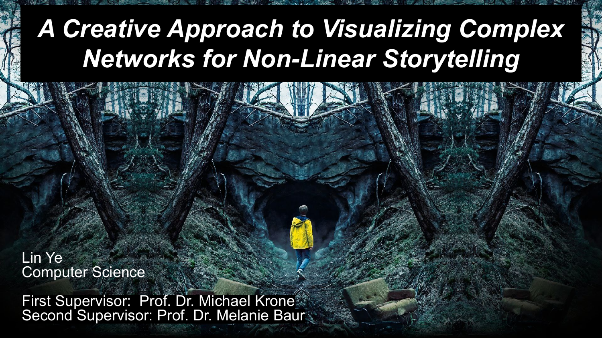

This Bachelor thesis: A Creative Approach to Visualizing Complex Networks for Non-Linear Storytelling, explores the field of graph drawing, it is a field that uses diagrams to visualize the relationships within a network of data points. A graph consists of vertices and edges: a vertex, also called a node, represents an entity, while edges represent the connections between these vertices. Graph drawing focuses on arranging vertices and edges in a way that makes the graphs easier to understand and more informative. Combining mathematics and computer science, it leverages knowledge from both areas to find the most effective way to represent complex data visually. The applications of graph drawing span many fields, including social network analysis, cartography, linguistics, and bioinformatics.